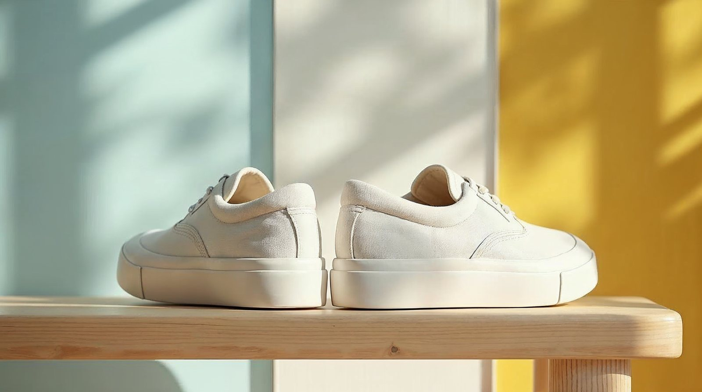
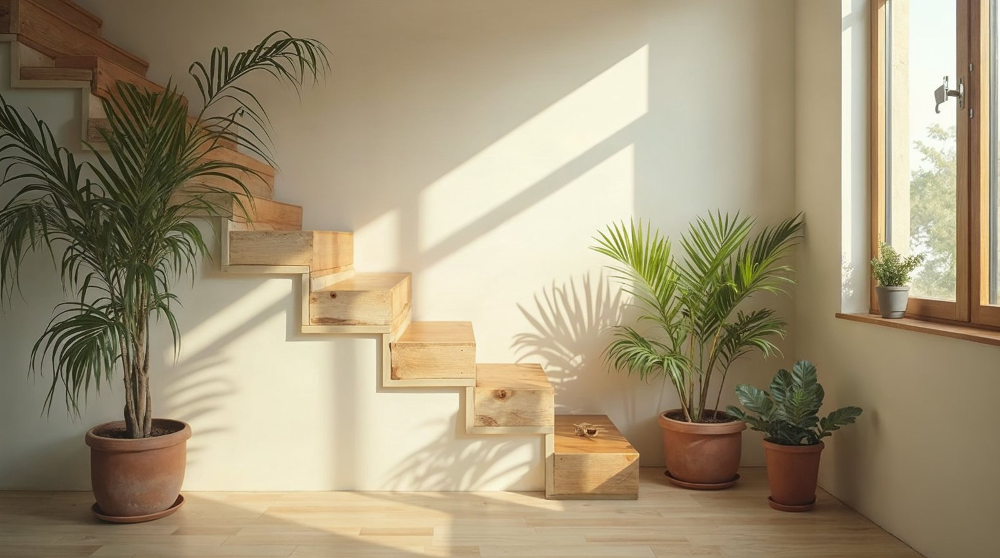
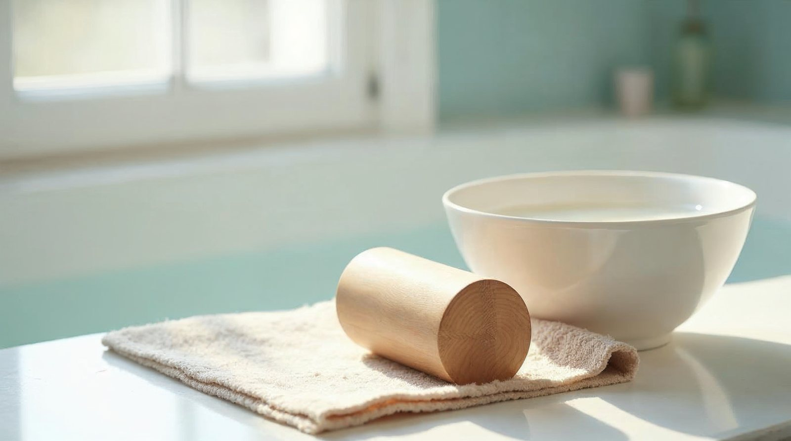
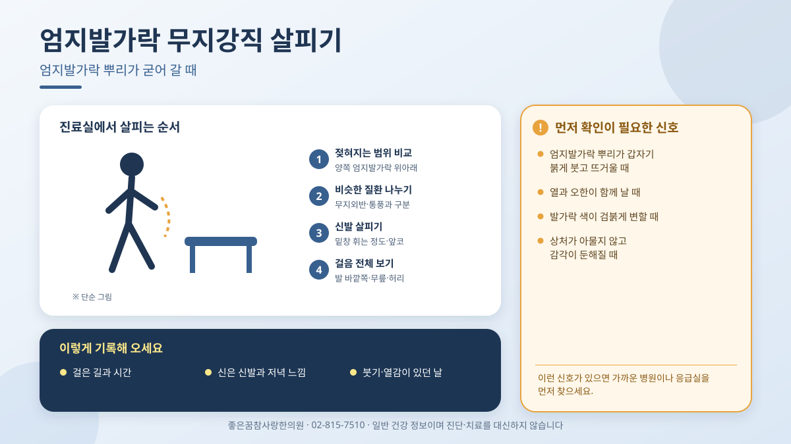

이종호 한의사 감수좋은꿈참사랑한의원 대표원장 (한의사 면허번호 19769)발행 2026-11-26 · 수정 2026-11-26
이 글의 차례
언덕길을 오르는데 엄지발가락 뿌리가 콕콕 찌르듯 아픕니다. 걸음을 내딛고 발끝으로 땅을 밀어낼 때마다 그 자리가 걸리는 느낌이 듭니다. 쪼그려 앉아 발가락을 꺾어 보니 반대쪽보다 확연히 덜 젖혀집니다. 엄지발가락이 휘지는 않았는데 왜 이럴까 궁금해집니다.
엄지발가락이 아프다고 하면 많은 분이 무지외반이나 통풍을 먼저 떠올리십니다. 둘 다 흔한 질환이니 자연스러운 일입니다. 그런데 발가락이 바깥으로 휘지도 않았고, 갑자기 붉게 부어오른 적도 없는데 뿌리가 점점 굳어 간다면 무지강직을 함께 생각해 봅니다.
무지강직은 엄지발가락과 발등뼈가 만나는 관절, 흔히 엄지발가락 뿌리라고 부르는 자리의 연골이 닳고 관절 가장자리에 뼈가 덧자라면서 관절이 뻣뻣해지는 상태입니다. 쉽게 말해 엄지발가락 뿌리에 생기는 관절염이라고 이해하시면 됩니다.
이 관절은 걸을 때마다 크게 젖혀져야 하는 관절이라, 조금만 굳어도 걸음 전체에 영향을 줍니다. 이 글에서는 무지강직이 무엇인지, 왜 생기는지, 비슷한 질환과 어떻게 다른지, 그리고 신발과 걸음, 생활에서 무엇을 바꿔 볼 수 있는지를 정리해 보겠습니다.

엄지발가락 뿌리 관절은 어떤 일을 하나요
우리가 걸을 때 발은 뒤꿈치로 땅에 닿고, 발바닥 전체로 체중을 받은 다음, 마지막에 엄지발가락 뿌리를 축으로 땅을 밀어내며 앞으로 나아갑니다. 이 마지막 순간에 엄지발가락은 위로 크게 젖혀져야 합니다.
계단을 오르거나, 언덕을 오르거나, 쪼그려 앉거나, 발끝으로 서는 동작에서는 이 관절이 더 크게 젖혀집니다. 그래서 엄지발가락 뿌리는 작지만 걸음에서 가장 바쁜 관절 가운데 하나이고, 평생 수없이 굽혔다 펴지기를 반복합니다.
이 관절이 굳으면 발을 밀어낼 때 엄지발가락이 충분히 젖혀지지 않아 관절 위쪽이 서로 부딪히고, 그때마다 통증이 생깁니다. 몸은 통증을 피하려고 발 바깥쪽으로 체중을 옮기거나 보폭을 줄이는 쪽으로 걸음을 바꿉니다.
왜 엄지발가락 뿌리가 굳어 갈까요
가장 흔한 이유는 오랜 세월 반복된 사용입니다. 수없이 젖혀지며 체중을 받아 온 관절의 연골이 조금씩 닳고, 관절 가장자리, 특히 위쪽에 뼈가 덧자라면서 관절이 젖혀지는 범위가 줄어듭니다. 나이가 들수록 흔해지는 이유입니다.
예전에 엄지발가락을 세게 찧었거나, 운동 중 엄지발가락이 크게 꺾이는 부상을 겪은 뒤에 생기는 경우도 있습니다. 축구, 달리기, 춤처럼 발끝으로 밀어내는 동작이 많은 운동을 오래 해 온 분들에게서도 보입니다.
발의 모양도 영향을 줍니다. 엄지발가락이 둘째 발가락보다 긴 발, 첫째 발등뼈가 유난히 길거나 높은 발, 평발처럼 발 안쪽으로 체중이 쏠리는 발에서는 이 관절이 더 많은 부담을 받습니다. 가족 중에 비슷한 증상이 있는 경우도 있습니다.
어떤 느낌으로 나타나나요
처음에는 오래 걷거나 언덕을 오른 날 엄지발가락 뿌리가 뻐근하고 시큰한 정도입니다. 차츰 엄지발가락을 위로 젖히는 범위가 줄고, 젖힐 때 관절 위쪽이 걸리며 아파집니다. 아침에 뻣뻣하다가 움직이면 조금 풀리는 분도 있습니다.
관절 위쪽에 딱딱한 혹처럼 뼈가 덧자라 볼록하게 만져지기도 합니다. 이 자리에 신발 앞쪽이 닿으면 쓸리고 아프며, 굽 있는 신발을 신으면 엄지발가락이 젖혀진 채로 체중을 받아 통증이 심해집니다.
통증을 피하려고 발 바깥쪽으로 딛는 걸음이 오래되면, 발 바깥쪽과 새끼발가락 쪽, 종아리, 무릎, 엉덩이까지 뻐근해질 수 있습니다. 신발 밑창의 바깥쪽만 유난히 닳아 있다면 이런 걸음이 이어지고 있다는 신호일 수 있습니다. 그래서 엄지발가락 하나의 문제가 다리 전체의 불편으로 이어지는 경우가 적지 않습니다.
무지외반이나 통풍과는 어떻게 다른가요
무지외반은 엄지발가락이 둘째 발가락 쪽으로 휘면서 엄지발가락 뿌리 안쪽이 튀어나오는 상태입니다. 튀어나온 안쪽이 신발에 쓸려 아픈 것이 중심이고, 엄지발가락이 젖혀지는 범위는 비교적 남아 있는 경우가 많습니다.
무지강직은 엄지발가락이 휘지 않고 곧게 있는 경우가 많으며, 문제는 위로 젖혀지는 범위가 줄어드는 것입니다. 볼록한 곳도 안쪽보다 관절 위쪽, 발등 쪽에 생기는 편입니다. 물론 두 가지가 함께 있는 분도 있습니다.
통풍은 엄지발가락 뿌리가 갑자기 하룻밤 사이에 붉게 붓고 뜨거워지며, 이불이 스치기만 해도 아플 만큼 통증이 심해지는 경우가 많습니다. 반면 무지강직은 몇 달, 몇 년에 걸쳐 서서히 굳어 가는 흐름입니다. 갑자기 붓고 뜨거운 적이 있었다면 요산 수치를 함께 확인해 보시길 권합니다.
시간이 지나며 어떻게 달라지나요
초기에는 젖혀지는 범위가 조금 줄고, 많이 걸은 날에만 아픈 정도입니다. 이 시기에는 신발과 걸음만 바꿔도 일상이 한결 편해지는 경우가 많습니다. 아픈 날과 편한 날의 차이를 기록해 두면 무엇을 바꿔야 할지가 잘 보입니다.
조금 더 진행되면 관절 위쪽에 뼈가 덧자란 것이 만져지고, 평지를 걸을 때도 발을 밀어낼 때마다 걸리는 느낌이 듭니다. 이때는 신발 앞쪽이 관절 위를 누르지 않도록 고르는 것이 더 중요해집니다.
많이 굳은 경우에는 엄지발가락이 거의 젖혀지지 않고, 쉬고 있을 때도 뻐근함이 남습니다. 이 단계에서는 생활 관리만으로 일상이 어렵다면 정형외과에서 다른 치료 방법을 상의해 보시는 것이 좋습니다. 어느 단계인지는 진찰과 엑스레이를 함께 보고 판단합니다.

언덕과 계단이 많은 동네에서는
상도동처럼 언덕과 계단이 많은 동네에 사시면 오르막에서 엄지발가락이 크게 젖혀지는 일이 하루에도 여러 번 생깁니다. 같은 거리를 걸어도 평지보다 엄지발가락 뿌리가 받는 부담이 커서, 증상을 더 일찍, 더 자주 느끼실 수 있습니다.
오르막에서는 보폭을 조금 줄이고 발 전체로 디디듯 천천히 오르면 엄지발가락이 덜 젖혀집니다. 돌아가는 길이 조금 길더라도 경사가 완만한 길을 고르는 것도 방법입니다. 계단에서는 난간을 잡고 발 앞쪽만 걸치지 말고 발바닥 전체를 계단에 올려 보세요.
자주 헷갈리는 것
첫째, 발가락이 굳었으니 억지로 많이 젖혀야 풀린다는 생각입니다. 관절 위쪽에 뼈가 덧자라 부딪히는 경우에는 세게 젖힐수록 그 자리가 더 아플 수 있습니다. 통증이 없는 범위 안에서 부드럽게 움직이는 것이 좋습니다.
둘째, 푹신한 신발이 가장 좋다는 생각입니다. 밑창이 너무 말랑하고 잘 휘는 신발은 걸을 때마다 엄지발가락을 크게 젖히게 만듭니다. 무지강직에서는 오히려 앞쪽 밑창이 적당히 단단하고 앞코가 살짝 들린 신발이 편한 경우가 많습니다.
셋째, 엄지발가락만의 문제라는 생각입니다. 아픈 걸음이 오래되면 발 바깥쪽, 무릎, 허리까지 부담이 옮겨 갑니다. 엄지발가락과 함께 걸음 전체를 살펴야 하는 이유입니다.
먼저 이렇게 여쭙니다
처음 오시면 저는 대략 이런 순서로 여쭙니다. 미리 생각해 오시면 이야기가 훨씬 수월해집니다.
- 엄지발가락 뿌리의 어느 쪽이 아프신가요? 위쪽인가요, 안쪽인가요?
- 엄지발가락을 위로 젖힐 때 반대쪽보다 덜 젖혀지나요?
- 언덕, 계단, 쪼그려 앉기, 굽 있는 신발에서 더 아프신가요?
- 엄지발가락이 갑자기 붉게 붓고 뜨거워진 적이 있나요?
- 예전에 엄지발가락을 다치거나 세게 찧은 적이 있나요?
- 즐겨 신는 신발과 하시는 운동은 무엇인가요?
- 발 바깥쪽, 무릎, 허리에 함께 불편한 곳이 있나요?
정확히 답하지 못하셔도 괜찮습니다. 자주 신는 신발을 신고 오시면 밑창이 닳은 모양과 앞코의 주름만으로도 걸음 습관에 대해 많은 것을 알 수 있습니다.
하시는 일도 함께 여쭙니다. 주방이나 매장처럼 오래 서서 일하시는지, 쪼그려 앉아 일하는 시간이 많은지, 계단을 자주 오르내리는 일인지에 따라 엄지발가락이 받는 부담이 크게 달라지기 때문입니다.

일상에서 먼저 해 볼 수 있는 것
무지강직은 엄지발가락이 젖혀지는 횟수와 각도를 줄여 주는 것이 생활 관리의 중심입니다. 신발과 걸음을 조금씩 바꿔 보세요.
- 앞쪽 밑창이 너무 말랑하지 않고 잘 휘지 않는 신발 고르기
- 앞코가 살짝 들린 신발로 발을 굴리듯 걷게 하기
- 발가락 앞쪽 공간이 넉넉해 관절 위쪽이 눌리지 않는 신발 고르기
- 굽 높은 신발은 아픈 동안 신는 시간을 줄이기
- 쪼그려 앉기, 발끝으로 오래 서기, 가파른 언덕은 잠시 줄이기
- 통증 없는 범위에서 엄지발가락을 부드럽게 위아래로 움직이기
걷기 운동은 아픈 동안 평지 위주로 하시고, 언덕과 계단이 많은 길은 잠시 피해 보세요. 운동을 이어 가고 싶다면 자전거나 수영처럼 엄지발가락이 크게 젖혀지지 않는 운동이 도움이 될 수 있습니다.
발 안쪽으로 체중이 쏠리는 평발이라면 아치를 받쳐 주는 깔창이 엄지발가락 뿌리의 부담을 나누어 줄 수 있습니다. 깔창은 발 모양에 따라 맞는 것이 다르니, 신어 보고 편한지를 기준으로 고르시면 됩니다.
저녁에 관절이 뻐근하고 열감이 없다면 미지근한 물에 발을 담가 부드럽게 움직여 주는 것이 편하다는 분이 많습니다. 반대로 붓고 열감이 있는 날에는 따뜻하게 하기보다 쉬게 해 주세요.
한의원에서 함께 살필 수 있는 경우
- 오래 걷거나 언덕을 오른 날 엄지발가락 뿌리가 뻐근하고 시큰한 경우
- 아픈 발가락을 피하느라 발 바깥쪽, 종아리, 무릎이 뻐근한 경우
- 무지외반이나 평발과 함께 있어 발 전체의 균형을 살피고 싶은 경우
- 추운 날이나 저녁에 발이 시리고 뻣뻣한 느낌이 심해지는 경우
- 신발과 걸음을 어떻게 바꿔야 할지 함께 정리하고 싶은 경우
좋은꿈참사랑한의원에 오시면 먼저 아래 '먼저 확인이 필요한' 신호가 없는지부터 봅니다. 그다음 맥을 짚고, 양쪽 엄지발가락의 움직이는 범위와 아픈 자리, 발 아치, 걸음에서 발을 밀어내는 모습, 종아리와 발바닥의 긴장을 함께 살핍니다.
진찰한 내용을 바탕으로 발과 종아리 주변의 긴장을 푸는 침, 온열 관리, 신발과 깔창, 걷는 습관 안내 가운데 지금 상태에 맞는 것을 정합니다. 뼈의 변화가 많이 진행된 것으로 보이면 엑스레이 확인과 정형외과 상담을 함께 권해 드립니다.
통풍이나 당뇨처럼 함께 관리하시는 질환이 있다면 해당 진료는 그대로 이어 가시고, 처방받은 약은 상의 없이 멈추지 않으시길 바랍니다. 한약 상담을 함께 할 때는 드시는 약을 모두 확인하고 신중하게 정합니다.
이렇게 기록해 오시면 상담이 쉬워집니다
무지강직은 어떤 신발과 길에서 아팠는지가 중요한 단서입니다. 1~2주만 간단히 적어 보세요.
- 그날 걸은 시간과 길(평지, 언덕, 계단)
- 신은 신발과 그날 저녁 엄지발가락 뿌리의 느낌
- 쪼그려 앉기나 발끝으로 서기를 한 일
- 붓기나 열감이 있었던 날
- 발 바깥쪽, 무릎, 허리처럼 함께 불편했던 곳
엄지발가락을 위로 젖힌 모습을 양쪽 모두 옆에서 사진으로 찍어 두시면, 젖혀지는 각도의 차이를 진료 때 함께 비교해 볼 수 있습니다.
작은 관절이 만드는 큰 걸음
엄지발가락 뿌리는 작지만 하루 수천 걸음을 이끄는 관절입니다. 그 관절이 조금 굳었다면, 덜 젖혀지도록 신발을 바꾸고 걸음을 다듬어 주는 것만으로도 하루의 걸음이 한결 가벼워질 수 있습니다. 관절을 억지로 되돌리기보다 지금의 관절과 사이좋게 지내는 법을 찾는 것이 목표입니다.
오늘은 신발장의 신발들을 꺼내 앞쪽 밑창을 손으로 휘어 보세요. 너무 쉽게 휘는 신발과 적당히 버티는 신발을 나누어 보고, 다음에 오실 때 자주 신는 한 켤레를 신고 와 주세요.
이런 증상은 먼저 확인이 필요합니다
- 엄지발가락 뿌리가 갑자기 붉게 붓고 뜨거우며 열과 오한이 함께 나는 경우
- 발가락 색이 검붉게 변하거나 상처가 아물지 않고 감각이 둔해지는 경우
이런 신호가 있으면 한의원보다 가까운 병원이나 응급실을 먼저 찾으세요.
함께 읽으면 좋은 글
- 엄지발가락이 휘고 튀어나온 곳이 아픈 무지외반 통증은 어떻게 살피나요?
- 엄지발가락이 붓고 화끈거리는 통풍, 요산 수치와 함께 무엇을 살피나요?
- 평발이거나 발 아치가 무너져 발바닥 안쪽이 아플 때는 무엇을 살피고 어떻게 관리하나요?
- 발바닥 통증은 어떤 종류가 있고 어떻게 구분해서 살피나요?
- 전신 체형 검사와 족저 검사는 무엇을 살피나요?

여쭙는 것
- 엄지발가락 뿌리의 어느 쪽이 아프신가요? 위쪽인가요, 안쪽인가요?
- 엄지발가락을 위로 젖힐 때 반대쪽보다 덜 젖혀지나요?
- 언덕, 계단, 쪼그려 앉기, 굽 있는 신발에서 더 아프신가요?
생활에서 해 볼 것
- 앞쪽 밑창이 너무 말랑하지 않고 잘 휘지 않는 신발 고르기
- 앞코가 살짝 들린 신발로 발을 굴리듯 걷게 하기
- 발가락 앞쪽 공간이 넉넉해 관절 위쪽이 눌리지 않는 신발 고르기
한의원에서 함께 살필 것
- 오래 걷거나 언덕을 오른 날 엄지발가락 뿌리가 뻐근하고 시큰한 경우
- 아픈 발가락을 피하느라 발 바깥쪽, 종아리, 무릎이 뻐근한 경우
- 무지외반이나 평발과 함께 있어 발 전체의 균형을 살피고 싶은 경우
먼저 확인이 필요한 신호
- 엄지발가락 뿌리가 갑자기 붉게 붓고 뜨거우며 열과 오한이 함께 나는 경우
- 발가락 색이 검붉게 변하거나 상처가 아물지 않고 감각이 둔해지는 경우
한눈에 보는 표
| 구분 | 핵심 |
|---|---|
| 여쭙는 것 | 엄지발가락 뿌리의 어느 쪽이 아프신가요? 위쪽인가요, 안쪽인가요? 엄지발가락을 위로 젖힐 때 반대쪽보다 덜 젖혀지나요? |
| 생활에서 해 볼 것 | 앞쪽 밑창이 너무 말랑하지 않고 잘 휘지 않는 신발 고르기 앞코가 살짝 들린 신발로 발을 굴리듯 걷게 하기 |
| 한의원에서 함께 살필 것 | 오래 걷거나 언덕을 오른 날 엄지발가락 뿌리가 뻐근하고 시큰한 경우 아픈 발가락을 피하느라 발 바깥쪽, 종아리, 무릎이 뻐근한 경우 |
| 먼저 확인이 필요한 신호 | 엄지발가락 뿌리가 갑자기 붉게 붓고 뜨거우며 열과 오한이 함께 나는 경우 발가락 색이 검붉게 변하거나 상처가 아물지 않고 감각이 둔해지는 경우 |
자주 묻는 질문
무지강직과 무지외반은 어떻게 다른가요?
무지외반은 엄지발가락이 둘째 발가락 쪽으로 휘며 안쪽이 튀어나오는 상태이고, 무지강직은 휘지 않은 채 뿌리 관절이 굳어 위로 잘 젖혀지지 않는 상태입니다. 두 가지가 함께 있기도 해서 진찰로 확인합니다.
굳은 엄지발가락은 세게 젖혀서 풀어야 하나요?
관절 위쪽에 뼈가 덧자라 부딪히는 경우에는 세게 젖힐수록 더 아플 수 있습니다. 통증 없는 범위 안에서 부드럽게 움직이시길 권합니다.
어떤 신발이 편한가요?
앞쪽 밑창이 잘 휘지 않고 앞코가 살짝 들려 발을 굴리듯 걷게 해 주는 신발, 발가락 앞쪽이 넉넉한 신발이 편한 경우가 많습니다. 굽 높은 신발은 아픈 동안 줄여 보세요.
엑스레이를 찍어 봐야 하나요?
관절 가장자리에 뼈가 덧자란 정도와 관절 사이 간격은 엑스레이로 확인합니다. 진찰 뒤 필요하다고 판단되면 정형외과 검사를 안내해 드립니다.
엄지발가락이 갑자기 붓고 뜨거웠던 적이 있어요.
통풍처럼 다른 원인이 있을 수 있어서 요산 수치를 함께 확인해 보시길 권합니다. 진료 때 언제, 얼마나 지속됐는지를 말씀해 주세요.
좋은꿈참사랑한의원은 재진 때 지난번 이야기부터 이어서 여쭙니다. 진료시간과 예약은 오시는 길에서 확인하세요.
어디서 상담받을 수 있나요?
좋은꿈참사랑한의원은 서울 동작구 만양로2길 2 신성빌딩 3층·5층(서울 동작구 상도동, 7호선 상도역 3번 출구 근처)에 있습니다. 한의사 3명(이종호 대표원장, 조영기 수석진료원장, 정원영 진료원장)이 진료합니다. 진료시간은 평일 09:30~20:00(점심 13:00~14:00), 토·일·공휴일 09:30~15:00이며, 방문 전 전화로 확인을 권합니다. 예약은 네이버 예약, 카카오톡 상담, 전화 02-815-7510로 받습니다.
이 글은 일반적인 건강 정보이며 개인의 진단이나 치료를 대신하지 않습니다. 증상이 있거나 복용 중인 약이 있다면 진료를 통해 확인하세요. 치료 효과는 개인마다 다를 수 있습니다.
작성 기준: 일반적으로 알려져 있는 건강 정보를 참고해 정리했습니다(대표원장 감수). 증상 기록은 1~2주 동안 하루 1회, 비슷한 시간에 적어 오시면 지난 상태와 비교하기 쉽습니다.